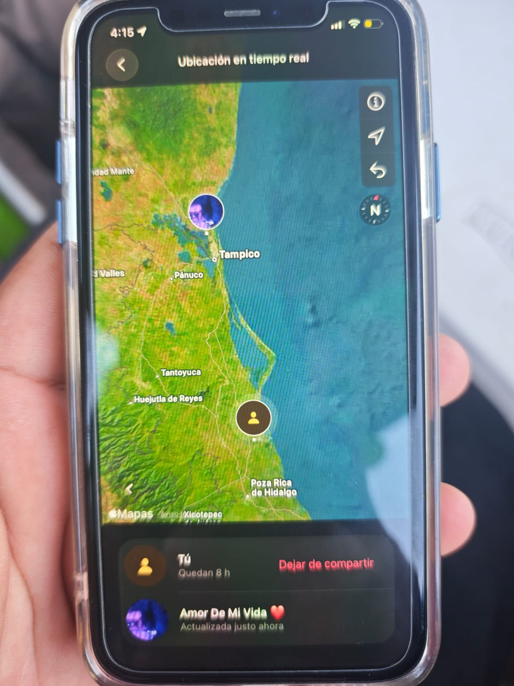

Un rinconcito dulce, musical y lleno de cariño para ti — con fotos, canciones que me recuerdan a ti y todo lo que siento.

Tan lejos pero tan cerca mi vida🤕❤️.
Canción de esta página
Listo para reproducir audio
A veces miro la distancia y duele un poquito no poder cruzarte la calle y abrazarte; se siente tan cerca en el corazón y a la vez tan lejos...
" Hay dias grises que deseo verte. Pero se que hay dias que si, que todo esta bien. Que solo es cuestión de fé para poderte ver... Con esto dejo claro que, en la vida solo habrá una mujer. Que ame y que cuide de mi corazón y esa solo serás tú... Por siempre mi amor❤️🫶"
Ver esa ubicación en tiempo real me parte y me calma al mismo tiempo. Duele un poco la nostalgia de no tenerte aquí al lado, de extrañar tu presencia de verdad y de saber que hay distancia entre nosotros; pero ver que ahí estás, me recuerda que lo nuestro sigue ahí, firme y real.
Cierro este libro con el corazón en la mano y con la misma certeza de siempre: aunque hoy nos toque esperar y extrañarnos, mi lugar sigue siendo a tu lado. Gracias por cada momento, por tu cariño y por ser el amor de mi vida.❤️🫶